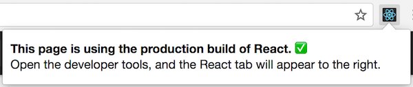

优化性能
在内部，React使用几种巧妙的技术来最大限度地减少更新 UI 所需的昂贵的 DOM 操作的数量。 对于大多数应用，使用 React 可以达到一个快速的用户界面，而不需要做太多的工作来专门优化性能。 然而，有几种方法可以加快你的React应用。
使用生产版本
如果你在你的 React 应用程序中进行检测性能问题时，确保你正在使用压缩过的生产版本。
默认情况下，React包含很多在开发过程中很有帮助的警告。 然而，这会导致 React 更大更慢。因此，在部署应用时，请确认使用了生产版本。
如果你不确定构建过程是否正确，可以在 chrome 中安装 React开发者工具 。 当你访问一个生产模式的React页面时，这个工具的图标会有一个黑色的背景：

如果你访问一个开发模式的 React 网站时，这个工具的图标会有一个红色的背景：

最好在开发应用时使用开发模式，部署应用时换为生产模式。
以下是构建生产用应用的流程。
Create React App
如果你的项目是以 Create React App 创建的，运行：
npm run build这将会在该项目的 build/ 文件夹内创建一个生产版本的应用。
注意只有发布项目时才有必要这样做，正常开发时，使用 npm start 。
单文件构建
我们提供压缩好的生产版本的 React 和 React DOM 文件:
<script src="https://unpkg.com/react@15/dist/react.min.js"></script>
<script src="https://unpkg.com/react-dom@15/dist/react-dom.min.js"></script>注意只有结尾为 .min.js 的React文件才是适合生产使用的。
Brunch
对于创建最高效的 Brunch 生产版本，需要安装 uglify-js-brunch 插件：
# 如果使用 npm
npm install --save-dev uglify-js-brunch
# 如果使用 Yarn
yarn add --dev uglify-js-brunch然后，为了创建生产构建版本，在 build 命令后添加 -p 参数：
brunch build -p注意只有生产版本需要这样操作。 不要在开发环境中安装这个插件或者使用 -p 参数，因为它会隐藏掉有用的 React 警告并使构建过程更慢。
webpack
注意： 如果你正在使用 Create React App 方式，参考上述文档。 本节只适用于直接配置Webpack的情况。
为了创建最高效的Webpack生产版本，需要在生产版本的配置中添加这些插件：
new webpack.DefinePlugin({
'process.env': {
NODE_ENV: JSON.stringify('production')
}
}),
new webpack.optimize.UglifyJsPlugin()
注意只有生产版本需要这样操作。 你不应该在开发环境中应用 UglifyJsPlugin 插件 和 DefinePlugin 插件的 'production' 值， 因为它们会隐藏掉有用的 React 警告并使构建过程更慢。
使用 Chrome 性能分析工具 分析组件性能
在 开发模式 中，你可以在支持相关功能的浏览器中使用性能工具来可视化组件 装载(mount) ，更新(update) 和 卸载(unmount) 的各个过程。
避免更新
React 构建和维护渲染 UI 的内部表示。它包括你从组件中返回的 React 元素。 这些内部状态使得React只有在必要的情况下才会创建DOM节点和访问存在DOM节点， 因为对JavaScript对象的操作是比DOM操作更快。这被称为"虚拟DOM"，React Native的基于上述原理。
当组件的 props 和 state 更新时，React 通过比较新返回的元素 和 之前渲染的元素 来决定是否有必要更新DOM元素。 如果二者不相等，则更新DOM元素。
在一些情况下，你的组件可以通过重写生命周期函数 shouldComponentUpdate 来优化性能。 该函数会在重新渲染流程前触发。该函数的默认实现中返回的是 true，使得 React 执行更新操作：
shouldComponentUpdate(nextProps, nextState) {
return true;
}如果你的组件在部分场景下不需要更行，你可以在 shouldComponentUpdate 返回 false 来跳过整个渲染流程，包括调用render() 和之后流程。
shouldComponentUpdate In Action
下面有一个组件子树，其中 SCU 代表 shouldComponentUpdate 函数返回结果。 vDOMEq 代表渲染的 React 元素是否相等。最后，圆圈内的颜色代表组件是否需要更新。

因为以 C2 为根节点的子树 shouldComponentUpdate 返回的是 false ，React不会尝试重新渲染 C2，并且也不会尝试调用 C4 和 C5 的 shouldComponentUpdate 。
对于 C1 和 C3 ，shouldComponentUpdate 返回 true ，所以 React 需要向下遍历。对于 C6 ，shouldComponentUpdate 返回 true ，并且需要渲染的元素不相同，因此 React 需要更新DOM节点。
最后一个值得注意的例子是 C8 。React 必须渲染这个组件，但是由于返回的 React 元素与之前渲染的元素相比是相同的，因此不需要更新 DOM 节点。
注意，React仅仅需要修改 C6 的 DOM ，这是必须的。对于 C8 来讲，通过比较渲染元素被剔除，对于 C2 子树和 C7 ，因为shouldComponentUpdate 被剔除，甚至都不需要比较 React 元素，也不会调用 render 方法。
例子
如果你想要你的组件仅当 props.color 或 state.count 发生改变时需要更新，
你可以通过 shouldComponentUpdate 函数来检查：
class CounterButton extends React.Component {
constructor(props) {
super(props);
this.state = {count: 1};
}
shouldComponentUpdate(nextProps, nextState) {
if (this.props.color !== nextProps.color) {
return true;
}
if (this.state.count !== nextState.count) {
return true;
}
return false;
}
render() {
return (
<button
color={this.props.color}
onClick={() => this.setState(state => ({count: state.count + 1}))}>
Count: {this.state.count}
</button>
);
}
}
上面的代码，只有当props.color 或者 state.count 发生改变了，shouldComponentUpdate方法才能返回正确。如果props.color或者state.count不发生变化，组件是不会进行变化的。如果您的组件更复杂，您可以使用类似的模式，在所有的props和state字段之间进行“浅比较”，以确定组件是否应该更新。 这个模式很常见，React提供了一个帮助器来使用这个逻辑--只是继承了React.PureComponent。因此，这段代码是实现相同目标的一种更简单的方法。
class CounterButton extends React.PureComponent {
constructor(props) {
super(props);
this.state = {count: 1};
}
render() {
return (
<button
color={this.props.color}
onClick={() => this.setState(state => ({count: state.count + 1}))}>
Count: {this.state.count}
</button>
);
}
}
绝大部分情况，你可以适用React.PureComponent来代替你自己的shouldComponentUpdate。但是React.PureComponent只做了一个浅比较，所以如果props或state可能发生了突变，React.PureComponent可能不会去改变。
在复杂的数据结构中，这个可能会是一个问题。例如，假设您想要一个ListOfWords组件来呈现一个以逗号分隔的单词列表，其中有一个父WordAdder组件，它允许您单击一个按钮向列表中添加一个单词。下面的代码可能不会正常运行：
class ListOfWords extends React.PureComponent {
render() {
return <div>{this.props.words.join(',')}</div>;
}
}
class WordAdder extends React.Component {
constructor(props) {
super(props);
this.state = {
words: ['marklar']
};
this.handleClick = this.handleClick.bind(this);
}
handleClick() {
// This section is bad style and causes a bug
const words = this.state.words;
words.push('marklar');
this.setState({words: words});
}
render() {
return (
<div>
<button onClick={this.handleClick} />
<ListOfWords words={this.state.words} />
</div>
);
}
}
导致这个问题，是因为PureComponent对this.props.words的新值和老值做了浅比较。WordAdder的handleClick方法中，改变了单词数组的内容。即使实际上数组中的内容发生了变化，但是新值和老值的this.props.words是相等的，因此ListOfWords将不会改变，即使它有应该呈现的新单词。
不改变数据的能力
避免这个问题的最简单的方法是避免使用作为props或state的突变值。例如，上面的handleClick方法可以用concat重写为:
handleClick() {
this.setState(prevState => ({
words: prevState.words.concat(['marklar'])
}));
}
ES6支持对数组的扩展语法，使其更容易。如果您使用的是Create React应用程序，默认情况下该语法是可用的。
handleClick() {
this.setState(prevState => ({
words: [...prevState.words, 'marklar'],
}));
};
您也可以用类似的方式重写使对象发生变异以避免突变的代码。
例如，假设我们有一个名为colormap的对象，我们想要编写一个改变colormap.right = "blue"。我们可以写:
function updateColorMap(colormap) {
colormap.right = 'blue';
}
要想在不改变原始对象的情况下编写它，我们可以使用Object.assign()方法:
function updateColorMap(colormap) {
return Object.assign({}, colormap, {right: 'blue'});
}
updateColorMap现在返回一个新对象，而不是改变旧对象。Object.assign 是ES6的方法，因此需要一个polyfill。
有一个JavaScript提议，可以添加对象扩展属性，以使更新对象更容易，而不需要修改:
function updateColorMap(colormap) {
return {...colormap, right: 'blue'};
}
如果你使用的是Create React App，默认情况下，Object.assign和对象扩展语法是可用的。
使用不可变的数据结构
Immutable.js是解决这个问题的另一种方法。它提供了通过结构共享工作的不可变的、持久的集合:
不可变:一旦创建，集合不能在另一个时间点被改变。
持久化:新的集合可以从以前的集合中创建，也可以通过设置来创建。原始集合在创建新集合后仍然有效。
结构共享:新的集合是使用尽可能多的原始集合来创建的，减少复制到最低限度以提高性能。
Immutable使跟踪change变得方便。change总是会导致一个新对象，所以我们只需要检查对对象的引用是否已经更改。例如，在这个常规JavaScript代码中:
const x = { foo: 'bar' };
const y = x;
y.foo = 'baz';
x === y; // true
虽然y中的属性被修改了，但是它是对于x具有相同的对象引用，所以这个比较返回true。您可以用immutable.js编写类似的代码。
const SomeRecord = Immutable.Record({ foo: null });
const x = new SomeRecord({ foo: 'bar' });
const y = x.set('foo', 'baz');
const z = x.set('foo', 'bar');
x === y; // false
x === z; // true
在这种情况下，由于在改变x时返回一个新的引用，我们可以使用引用等式检查(x == y)来验证存储在y中的新值与存储在x中的原始值不同。
有两个库可以帮助我们使用Immutable数据，他们是 seamless-immutable和immutability-helper.